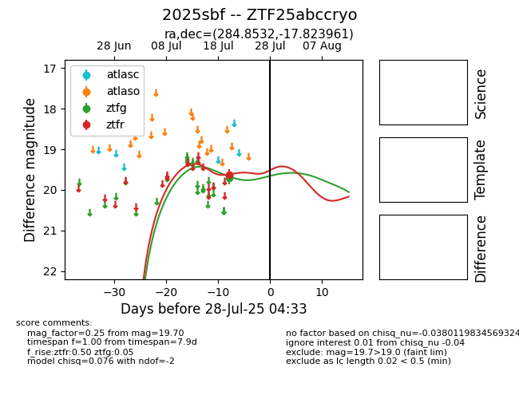

Target 2025sbf at 2025-07-28 04:33, see:
FINK: fink-portal.org/2025sbf
Lasair: lasair-ztf.lsst.ac.uk/objects/2025sbf
ALeRCE: alerce.online/object/2025sbf
TNS: wis-tns.org/object/2025sbf
YSE: ziggy.ucolick.org/yse/transient_detail/2025sbf
alt names
ZTF25abccryo (ztf,fink)
2025sbf (tns,yse)
coordinates:
equatorial (ra, dec) = (284.8532,-17.82396)
galactic (l, b) = (17.7981,-9.73256)
photometry
last ztfg=19.70, ztfr=19.62
2 ztfg, 1 ztfr detections
